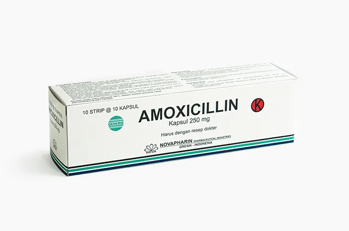

DETAIL OBAT
|
 |
|
| Nama Obat | Amoxicillin 500mg |
|---|---|
| Golongan Obat | Obat Keras |
| Bentuk | Kapsul |
| Stok | 100 |
| Harga Awal | Rp 7.000 |
| Tanggal Expired | 2027-10-30 |
| Manfaat | Membunuh bakteri penyebab infeksi (seperti radang tenggorokan, telinga, atau saluran kemih). |
| Dosis | sesuia resep dokter |
| Aturan Pakai | Diminum sesudah makan. |
| Efek Samping | Diare, mual, muntah, dan muncul ruam kulit (alergi). |
| Kontraindikasi | Kontraindikasi mutlak bagi pasien yang memiliki alergi berat terhadap Amoxicillin atau antibiotik golongan Penicillin lainnya. |